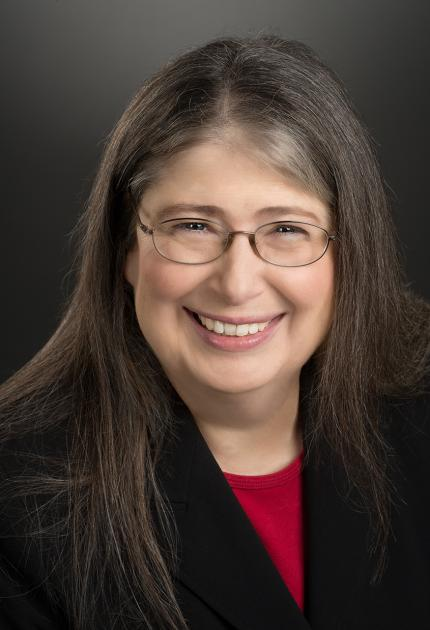

En bref
Née : 18 décembre 1951, Portsmouth (Virginie)
Études : MIT (licence 1973, doctorat 1988)
Entreprises : DEC, Sun, Intel, Dell
Surnom : « mère d'Internet »
Radia Perlman
née en 1951 - L'inventrice du protocole STP
Présentation
Radia Perlman est une ingénieure réseau américaine. Chez Digital Equipment Corporation, elle invente l'algorithme du Spanning Tree Protocol (STP), qui évite les boucles dans les réseaux Ethernet et leur permet de grandir. Cette invention lui a valu le surnom de « mère d'Internet », un titre qu'elle trouve exagéré.
1. Enfance et jeunesse
Radia naît en Virginie mais grandit dans le New Jersey, près d'Asbury Park, sans ambition particulière à l'époque. Elle étudie au MIT, où elle est l'une des quelque 50 femmes d'une promotion d'environ 1 000 étudiants.
Elle y apprend à programmer pour un cours de physique. Elle obtient une licence de mathématiques en 1973, puis un master en 1976, et un doctorat d'informatique en 1988.
2. Débuts dans l'informatique
Pendant ses études, elle travaille avec le groupe du MIT lié à BBN Technologies. Elle conçoit aussi un outil pour initier de jeunes enfants à la programmation, le TORTIS, inspiré du langage Logo.
Elle rejoint ensuite Digital Equipment Corporation (DEC), qu'elle décrit comme « le travail parfait au bon endroit au bon moment ». Elle y travaille sur le routage du protocole DECnet.
3. Ses grandes réalisations
Son patron lui demande de trouver un protocole simple permettant aux ponts réseau de trouver des chemins sans boucle. Selon les récits, elle invente l'algorithme en quelques jours, voire en un week-end.
Le STP
Il bloque les chemins redondants pour éviter les boucles dans le réseau.
Le routage
Elle contribue aux protocoles à état de liens, dont IS-IS.
TRILL
Un protocole pour mieux utiliser la bande passante Ethernet.
Pour expliquer le STP, elle a écrit un court poème, « Algorhyme ». Elle a aussi publié des manuels pédagogiques sur les réseaux, et sa thèse de 1988 porte sur le routage en présence de pannes malveillantes.
4. Dates clés
1951 : Naissance en Virginie.
1973 : Licence de mathématiques au MIT.
1976 : Master de mathématiques au MIT.
1985 : Publication de l'algorithme du STP.
1988 : Doctorat d'informatique au MIT.
2010 : Prix pour l'ensemble de sa carrière (SIGCOMM).
2022 : Fellow chez Dell Technologies.
5. Héritage et reconnaissance
Le STP a été standardisé sous le nom IEEE 802.1D. Il a permis de passer de réseaux limités à quelques centaines de machines dans un bâtiment à des réseaux de centaines de milliers de machines sur de vastes zones.
Elle a reçu les prix pour l'ensemble de sa carrière de USENIX et de SIGCOMM, et est entrée à l'Internet Hall of Fame et au National Inventors Hall of Fame. Elle est un modèle pour les femmes ingénieures en réseaux.